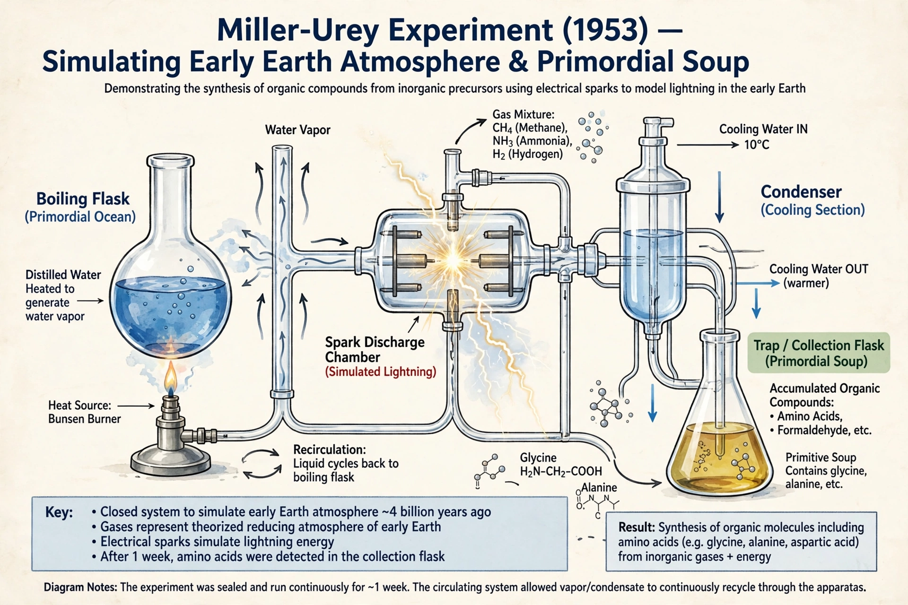

The Miller–Urey experiment (1952–53) was a landmark chemical experiment simulating conditions on the early Earth to test the origin of life. Graduate student Stanley Miller, working under Harold Urey at the University of Chicago, showed that amino acids — the building blocks of proteins — could form spontaneously from simple gases exposed to electric sparks simulating lightning.

| Conducted | 1952, published 1953 |
|---|---|
| Researchers | Stanley Miller, Harold Urey |
| Field | Abiogenesis, prebiotic chemistry |
A sealed glass apparatus circulated water vapour with methane, ammonia and hydrogen — the reducing atmosphere proposed by Oparin and Haldane and endorsed by Urey — past a continuous electric discharge, then condensed the products into a trap. After a week, paper chromatography revealed glycine, alanine and other amino acids, plus organic compounds forming a tarry residue.
The 1953 Science paper made headlines worldwide as evidence life could arise by natural chemistry. Reanalyses of Miller's archived samples (2008–2011), including experiments with volcanic gases and hydrogen sulfide, detected over 20 amino acids. Later work questioned how reducing the early atmosphere was, prompting variants with neutral atmospheres that still yield organics, albeit less efficiently. See abiogenesis.
The experiment founded modern prebiotic chemistry and astrobiology, inspiring studies of organics in meteorites (such as the Murchison meteorite) and on Titan, and remains a standard textbook illustration of testable origin-of-life science.